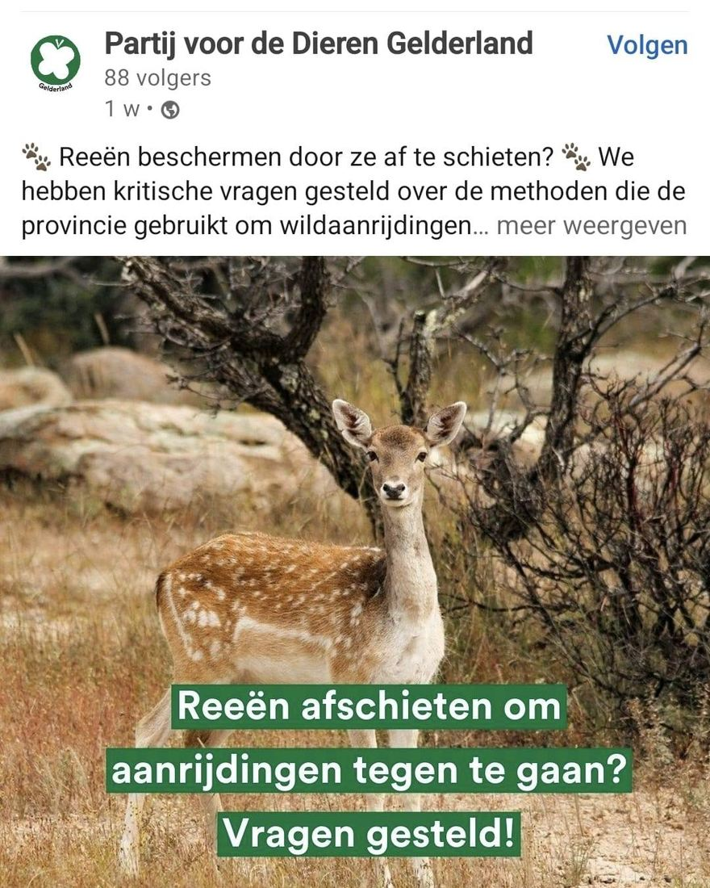

Damhert, geen ree
26 september 2024 · Partij voor de Dieren
- Op de foto
- Damhert
- Het ging over
- Ree

Je zou toch verwachten dat @partijvddieren het verschil wel zou weten tussen een Ree en een Damhert? Nou, blijkbaar niet dus..

Je zou toch verwachten dat @partijvddieren het verschil wel zou weten tussen een Ree en een Damhert? Nou, blijkbaar niet dus..